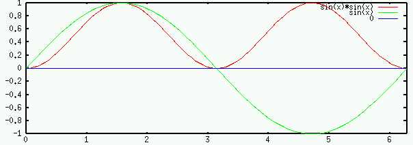
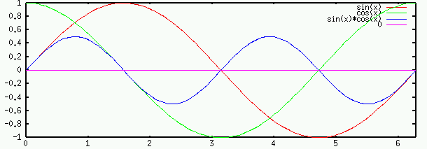
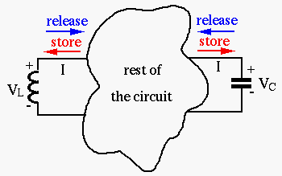

Next: Examples: Mechanical and Electrical Up: Chapter 1: Basic Quantities Previous: Resistor, Capacitor, and Inductor
The electric power associated with an element (R, C, or L) is the
product of the voltage  across and current
across and current  through the
element:
through the
element:
| (38) |
 over a time period
over a time period  , we get the energy
, we get the energy
| (39) |
 ,
,  , and
, and  .
.
When a voltage is applied across , the current through it is
, power consumption is
| (40) |
| (41) |
 is applied across , the current
through it is , and the power consumed by the resistor is
is applied across , the current
through it is , and the power consumed by the resistor is
| (42) |
| (43) |
, the current through it is
,
and the energy dissipated in time period
is:
| (44) |
to dissipate the same amount
of energy as
:
| (45) |
| (46) |
when
either a sinusoidal voltage with peak amplitude or a DC voltage
is applied across it.

Some useful trigonometric identities:
| (47) |
The average of a time varying current is the value of
a DC (direct current) current  that in period would
transfer the same charge
that in period would
transfer the same charge  :
:
| i.e. | (48) |
| (49) |
| (50) |
 , the average is:
, the average is:
 |
|||
|
(51) |
Given voltage across and current through a capacitor ,
the associated energy is:
| (52) |
If
, then
, and the energy dissipated
in period
 is
is
| (53) |
. In the first and third quarters of the period , the energy
is stored in the electric field of the capacitor (equivalent to a battery
being charged), but in the 2nd and 4th quarters of the period , the energy
is released from the capacitor to the rest of the circuit (equivalent to a
battery delivering power).
Given voltage across and current through an inductor ,
the associated energy is
| (54) |
If
, then
, and the energy dissipated
in time period
is
| (55) |
of a sinusoidal voltage. In the first and third quarter of the period
, the energy is stored in the magnetic field of the inductor, but in
the 2nd and 4th quarter of the period , the energy is released from the
inductor to the rest of the circuit.
The figure below shows the plots of the voltage across and current through the
capacitor and inductor. We note that the voltage and current are  or
or
 out of phase. Specifically,
out of phase. Specifically,
(or ).
(or ).
The figure below illustrates the energy flow in a circuit involving capacitor and inductor, as energy storing components:


Comparison of Energy storage in mechanical and electromagnetic systems:
and voltage  :
:
| (56) |
|
(57) |
and current  :
:
| (58) |
|
(59) |
 of 1 meter per second possesses 1/2 Joule
of kinetic energy.
of 1 meter per second possesses 1/2 Joule
of kinetic energy.
| (60) |
 calJoules
calJoules
 or compliance is
or compliance is
| (61) |
Comparison with mechanical systems:
The work of a mechanical system does is
where  is force and
is force and  is displacement.
is displacement.
is the stiffness, or where is the
compliance. The potential energy stored in the spring is
| (62) |
is a measure of the spring's ability to
store potential energy (the less stiff, the more potential energy can
be stored in the spring with the same force).
 has kinetic
energy
has kinetic
energy
| (63) |
 of a body is a measure of the body's ability to
store kinetic energy (the more mass, the more kinetic energy can be
stored in the body with the same velocity).
of a body is a measure of the body's ability to
store kinetic energy (the more mass, the more kinetic energy can be
stored in the body with the same velocity).